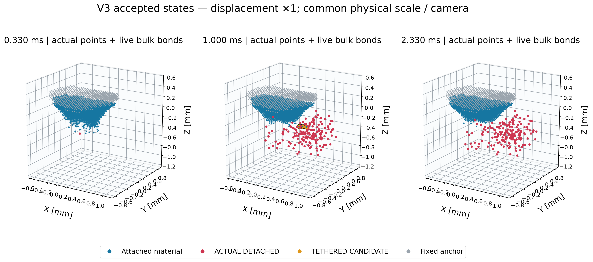
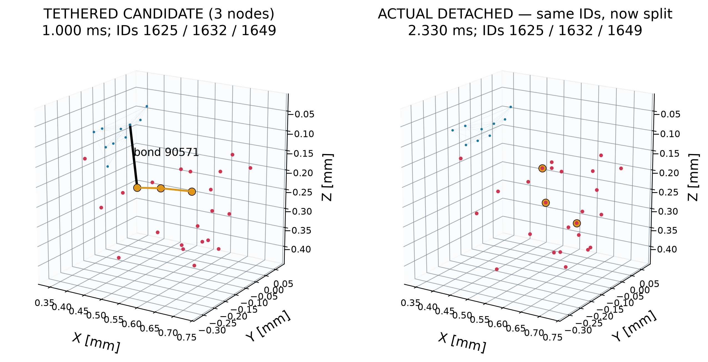
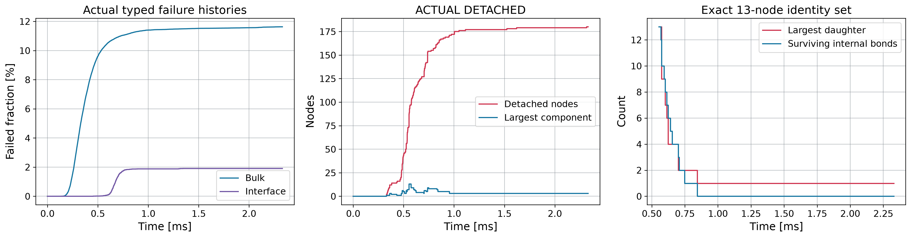
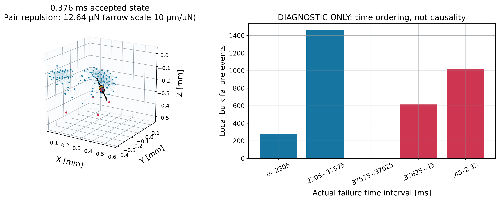
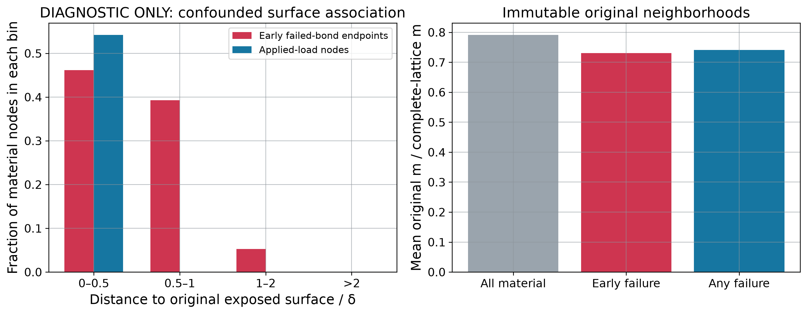
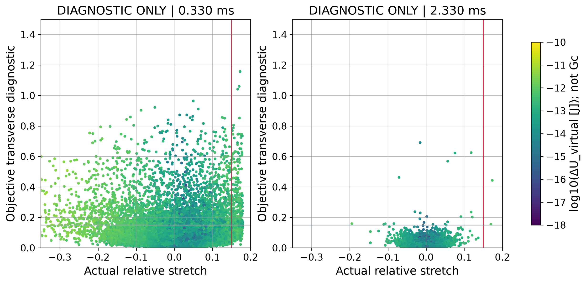
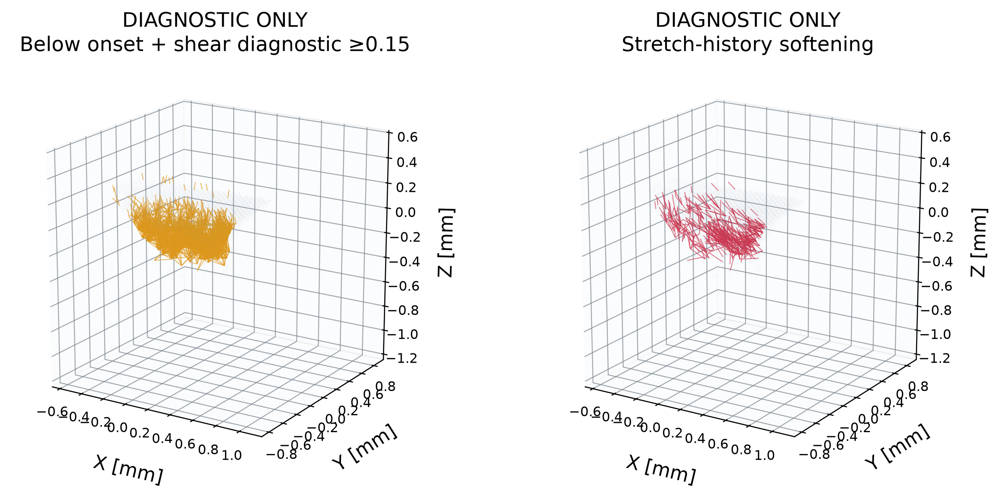
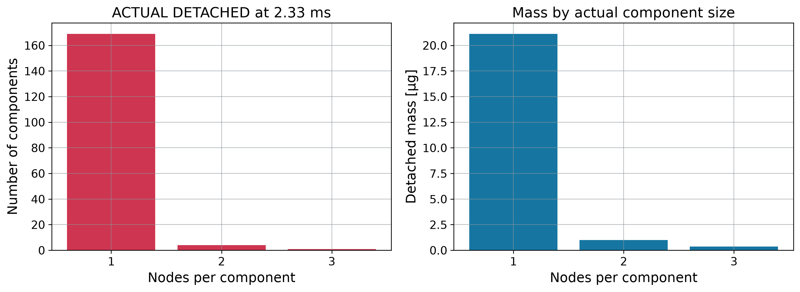
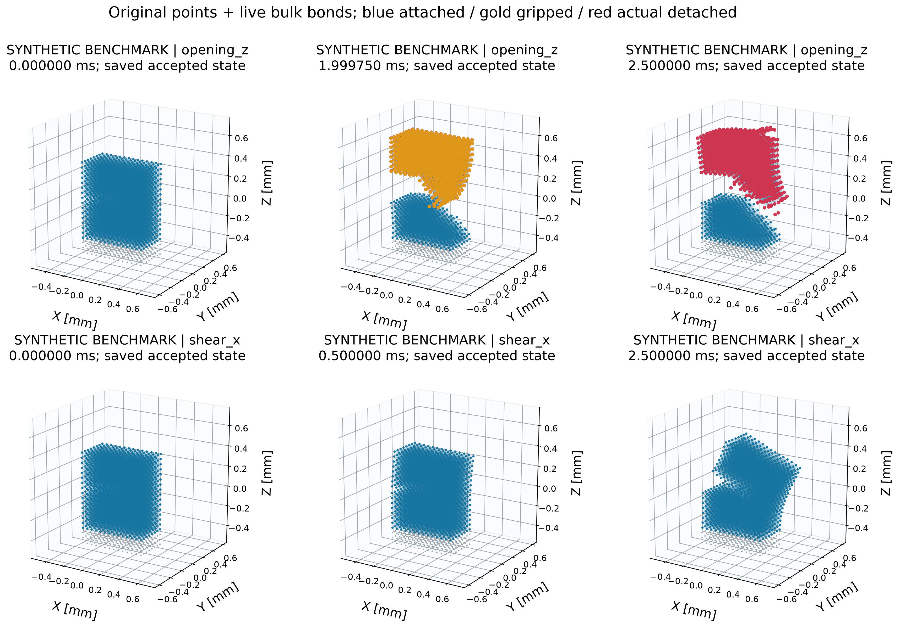
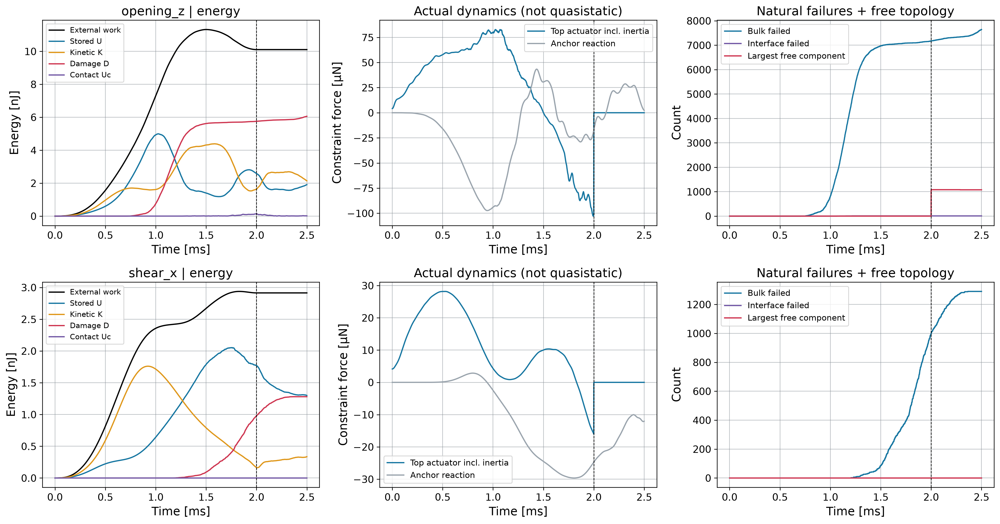

V3_CHUNK_FRAGMENTATION_MECHANISM_V1
真实点与存活原始键；位移 ×1。图例明确区分实际脱离、拴住候选、离线诊断及独立合成试样。
Fig01_V3_actual_states

ACTUAL DETACHED and TETHERED CANDIDATE are graph labels. All surviving bulk bonds shown; scaffold/interface lines omitted for readability. Axes use mm relative to the same reference centroid. No interpolated fracture surface.
Fig02_candidate_bridge

Only the three-node candidate passes the frozen graph screen at 1 ms. Orange keeps the same identities at final time; it is not an assertion that the candidate criteria still pass. Black bridge is drawn only while actually alive. Large candidates ≥34/114 nodes were not found. Candidate local shear is NOT MEASURED because the star is rank deficient.
Fig03_competition_and_breakup

Every accepted state is checked against original-bond connectivity. The 13-node component forms at 0.554125 ms with only 13/42 original internal bonds remaining, then splits at 0.5745 ms. Step plots represent event changes, not interpolated node states.
Fig04_contact_peak_audit

Positions and forces use SHA-exact recovered accepted state 1943. Arrows show computed original nonbonded pair repulsion only, with stated force scale. Neighborhood is fixed in reference coordinates within delta of either contact atom; widths of histogram time intervals differ. Damage predates peak contact.
Fig05_surface_horizon

Real exposed_surface.vtp closest-triangle distance, not distance to the 453 loaded nodes. Early means full bulk failure before the first interface softening. Each bar is conditional on its distance bin: the denominator is all material nodes in that bin (836 / 545 / 493 / 53), not all failed or loaded nodes; bars need not sum to one. Correlation is confounded by applied surface load and geometry; not a demonstrated surface-correction error.
Fig06_mixed_mode_quantitative

All valid live bulk/interface connections, no sampling. The 0.15 shear line is a diagnostic scale, not a failure criterion. Rank-deficient local stars omitted and counted in JSON. Energy comes from full endpoint-star virtual removal. Display limits crop extreme kinematic values; original FP64 values retained in NPZ.
Fig07_mixed_mode_locations

Original live bond segments at the first detachment keyframe, same physical scale/camera as the global V3 figure. Orange connections are kinematic observations and have NOT been virtually or physically deleted.
Fig08_actual_fragment_distribution

Mass counts material only, no anchors. One- and two-node debris are unresolved particle-scale products; not labeled clinical microemboli. Discrete equivalent diameters are not converged physical fragment diameters.
Fig09_benchmark_actual_states

Common scale/camera for both cases; displacement ×1. Intermediate state is the saved keyframe nearest the actual top-actuator force peak (including prescribed-motion inertia), not an interpolated peak state. Gold marks anchor-free components that still contain prescribed grip nodes before 2 ms; these are excluded from free-fragment counts. The same grip-release protocol is used in both cases.
Fig10_benchmark_energy_and_topology

Only loading direction differs. Dashed line: top displacement constraint released at zero prescribed terminal velocity; no material bond changes at release. Before release free topology excludes all gripped components. Full residual, original IDs, reactions and inertia are retained; U, D and residual are not calibrated Gc.